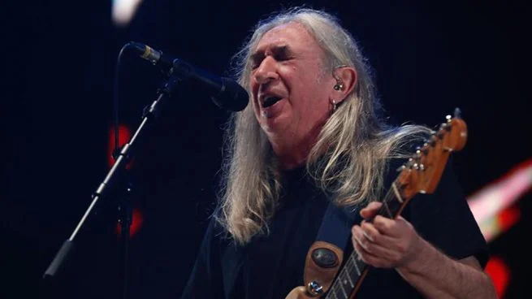

Concierto en Madrid
20 de diciembre de 2018 — WiZink Center
Detalles del evento
| Concepto | Información |
|---|---|
| Aforo | 15.000 personas |
| Precio de las entradas | 35 € |
| Fecha y hora del concierto |

Crónica
Tras 45 años encima de los escenarios representando el rock madrileño, Rosendo dio su último concierto en la capital el jueves 20 de diciembre de 2018. El evento tuvo lugar en el WiZink Center, donde el artista hizo las delicias de las 15.000 personas que llenaron el recinto.
Este concierto formó parte de la gira de despedida Mi tiempo, señorías…
, iniciada en marzo y que concluyó dos días después en Barcelona.
A sus 64 años, Rosendo decidió dejar los escenarios "para no consumirse", aunque su entorno dejó abierta la posibilidad de un regreso futuro.
Durante la noche, el músico repasó toda su carrera, desde los tiempos de Leño hasta sus grandes clásicos en solitario,
acompañado por una banda fiel y un público que le dedicó una ovación interminable.
He recibido mucho cariño, y me duele tener que parar, pero nos hacemos viejos
, afirmó Rosendo sobre el escenario madrileño.

Ubicación
Cierre
"A mi manera, pero agradecido." — Rosendo Mercado